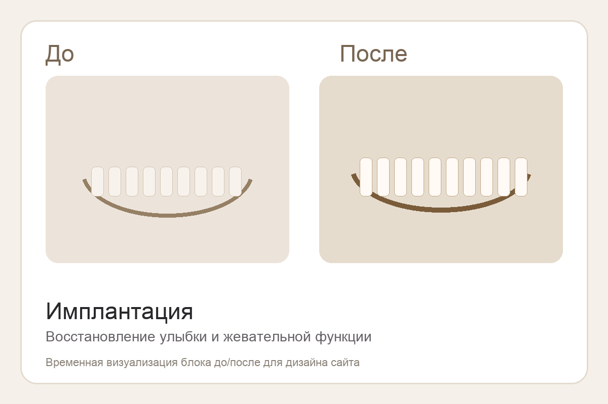
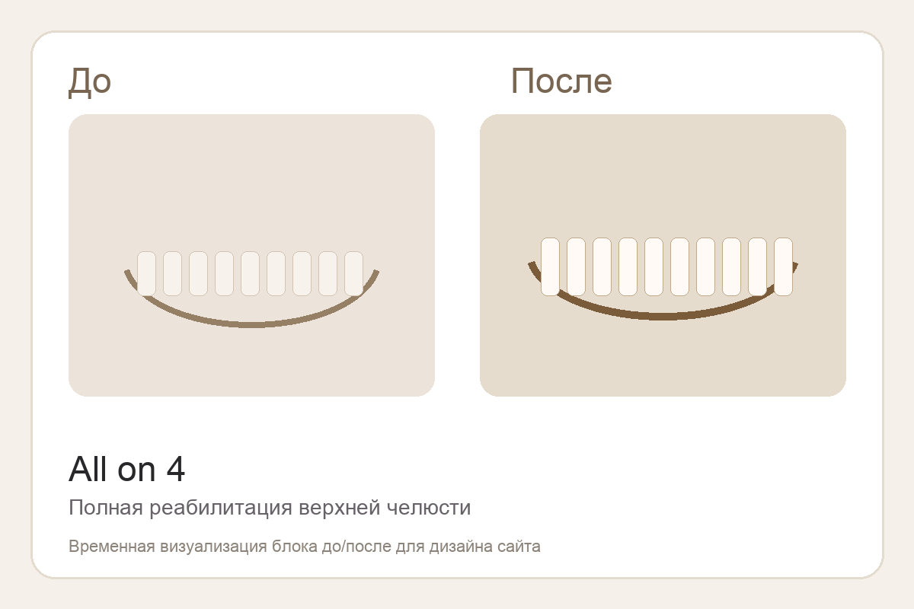
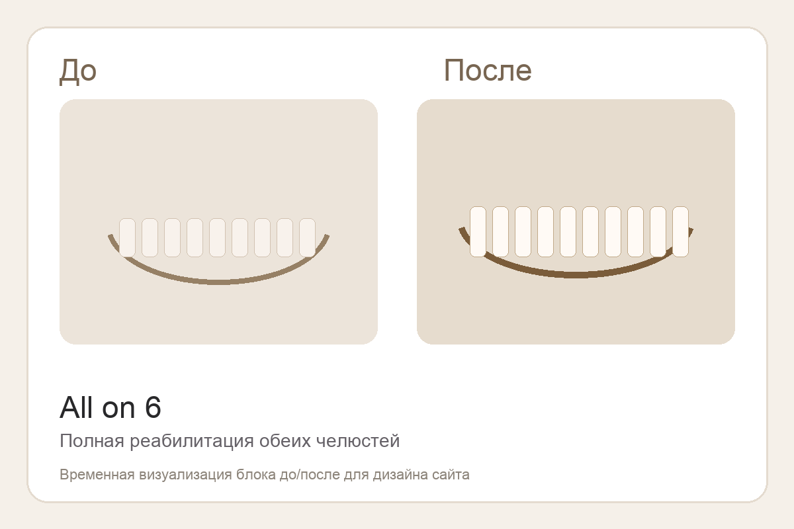
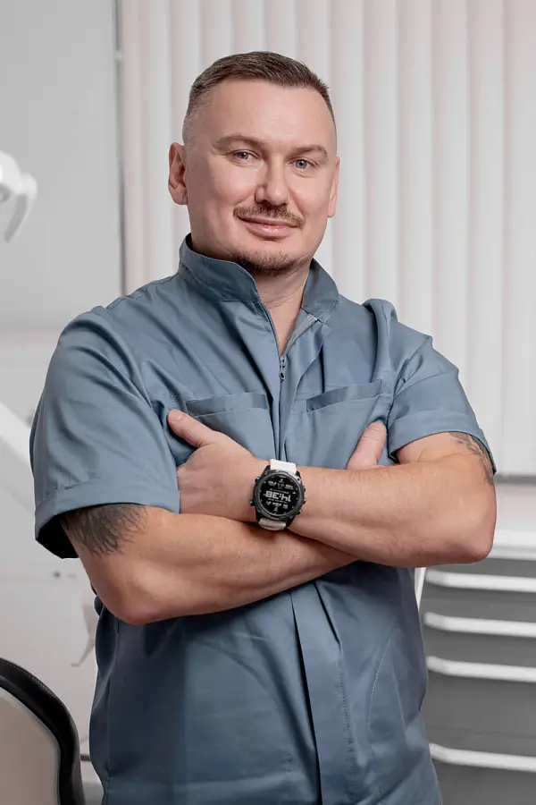
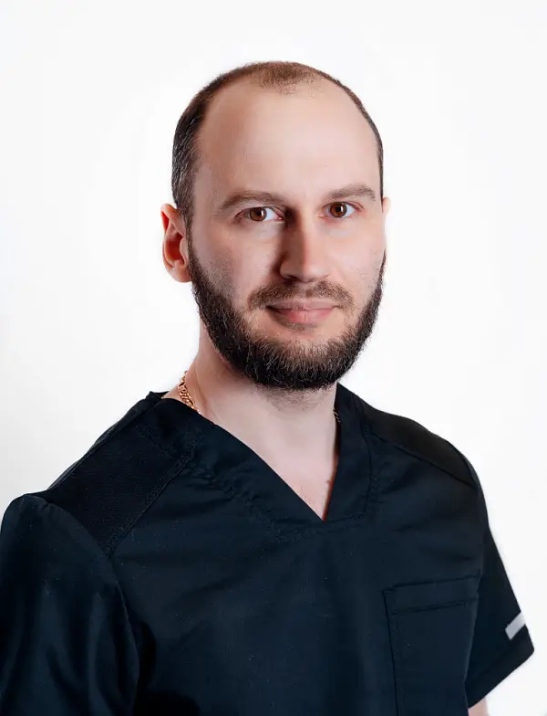
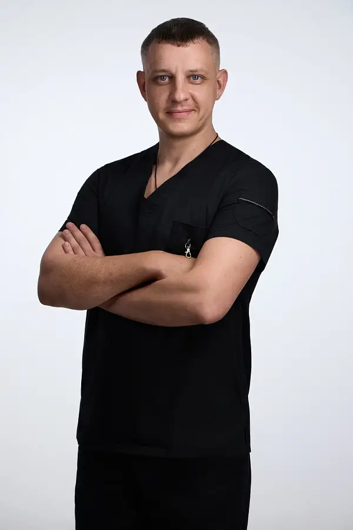

Не продаём один шаблон всем подряд
Одиночная имплантация, All on 4 и All on 6 решают разные задачи. Мы объясняем разницу на вашем клиническом случае, а не подталкиваем к одному сценарию ради чека.
Если нужен не просто имплант, а сильный итоговый результат, мы выстраиваем лечение от диагностики до финального протезирования. Вы сразу понимаете, какой протокол подходит именно вам, сколько это будет стоить и как пройти лечение максимально комфортно.
У большинства конкурентов либо много общих обещаний, либо перегруз по тексту. Здесь мы делаем ставку на ясность, доверие и сильный оффер уже с первого экрана.
Одиночная имплантация, All on 4 и All on 6 решают разные задачи. Мы объясняем разницу на вашем клиническом случае, а не подталкиваем к одному сценарию ради чека.
Сильная имплантация, это не только хирургия. Важны прикус, протезирование, нагрузка, эстетика и долгосрочный комфорт в жизни после лечения.
У многих пациентов главный барьер, это тревога. Поэтому седация, наркоз и спокойный маршрут лечения здесь не второстепенная опция, а часть оффера.
Мы не перегружаем страницу случайными блоками. Пациент быстро понимает, где он, кто его лечит, сколько это может стоить и почему можно оставить заявку уже сейчас.
Здесь важно сразу попасть в реальную боль человека, а не рассказывать общие вещи про стоматологию.
Когда отсутствует один или несколько зубов, страдает не только эстетика, но и привычное качество жизни, питание и уверенность в себе.
Пациенту трудно самому решить, нужна ли одиночная имплантация, All on 4 или All on 6. Нужен врач, который спокойно объяснит разницу.
Поэтому так важны точная диагностика, понятный план лечения, прозрачная стоимость и возможность пройти лечение максимально комфортно.
Человек должен быстро узнать себя в одном из сценариев и перейти к заявке без лишних сомнений.
Когда нужно восстановить один зуб без компромиссов по эстетике и функции.
Быстрое и практичное решение для полной челюсти на четырёх имплантах.
Более стабильный протокол для сложных случаев и высокого функционального запроса.
Этот блок помогает пациенту быстро узнать себя и понять, что он попал не просто на общую стоматологию, а в профильный сценарий под имплантацию и реабилитацию.
Понятный маршрут лечения, ориентир по срокам, честный бюджет и ясность, какой протокол действительно нужен в вашем случае.
Один из самых сильных блоков для доверия. Здесь пациент видит не обещания, а понятные примеры трансформации.

Восстановление улыбки и жевательной функции при полном отсутствии зубов.

Быстрое решение для полной челюсти с понятным сроком и эстетическим результатом.

Устойчивое решение для сложных случаев и более высокой жевательной нагрузки.
Имплантация зубов на Таганке с понятным планом лечения, сильной командой врачей и решениями под ключ, от одного импланта до All on 6.
Это уже не просто преимущества клиники, а аргументы, почему пациенту безопасно и выгодно оставить заявку именно здесь.
Используем современные методы анестезии, седацию и наркоз, если пациент тревожится или планируется объёмное хирургическое вмешательство.
Ничего не делаем вслепую. Каждое решение опирается на диагностику, клиническую картину и понятный ортопедический результат.
В проекте участвуют врачи с сильным опытом в имплантации, костной пластике, полной реабилитации и протоколах All on 4 / All on 6.
Пациент получает ясный план, этапность, сроки и финансовый ориентир, а не размытые обещания без конкретики.
Для пациентов, которые тревожатся перед лечением, боятся боли или хотят пройти хирургический этап максимально комфортно.
Имплантация и восстановление зубов без лишнего стресса. Подберём комфортный формат лечения, от мягкой седации до наркоза.
Пациенту важно быстро понять вилку бюджета, а не бояться оставить заявку из-за неизвестности.
от 30 000 ₽
Стартовый ориентир для восстановления одного зуба с индивидуальной диагностикой и планом лечения.
от 450 000 ₽ за челюсть
Практичный протокол для полной челюсти на четырёх имплантах с быстрой ортопедической частью.
от 550 000 ₽ за челюсть
Более стабильный и надёжный вариант при сложных случаях и высоком функциональном запросе.
Блок снимает тревогу и показывает, что путь пациента понятен и контролируем.
Люди покупают сложное лечение не у абстрактной клиники, а у конкретных сильных врачей. Поэтому этот блок должен продавать доверие.

Врач стоматолог-хирург, имплантолог, ортопед. Сильный профиль по имплантации, костной пластике и протезированию на имплантах.

Специализация: All on 4, All on 6, полная реабилитация и сложные хирургические случаи с высоким клиническим запросом.

Фокус на классической имплантации, немедленной нагрузке и операциях All on 4 / All on 6, где важны скорость и точность результата.
План лечения, честный расчёт стоимости, второе мнение, лечение во сне, консультация по КТ и помощь в выборе между All on 4 и All on 6.
Имплантация одного зуба, имплантация всех зубов, All on 4, All on 6, немедленная нагрузка и комплексная реабилитация под ключ.
Отзывы нужны не ради галочки, а чтобы закрывать ключевые триггеры: страх, сомнение, сложность случая и доверие к врачу.
«Помог окончательно определиться с ALL-ON-FOUR врач Бессонов Игорь Константинович. Изменил в лучшую сторону моё отношение к стоматологии. Спасибо, рекомендую.»
Пациент 32 Дент«Я очень рада, что доверила своё здоровье Серегину Сергею Сергеевичу. Удаление зубов и установка имплантов прошли без осложнений, всё прозрачно и понятно.»
Пациент 32 Дент«Непревзойдённый профессионализм докторов клиники помог в непростом лечении зубов и протезировании, а также преодолении психологического страха перед стоматологией.»
Пациент 32 ДентЭтот блок нужен, чтобы снять последние сомнения перед заявкой и не потерять тёплого лида на финише.
Срок зависит от клинической ситуации и выбранного протокола. После диагностики мы сразу объясняем этапы, сроки и когда можно рассчитывать на временное или постоянное протезирование.
В большинстве случаев лечение проходит комфортно за счёт современной анестезии. Для тревожных пациентов доступны седация и наркоз.
Это определяется после диагностики. Врач оценивает объём кости, нагрузку, клиническую ситуацию и подбирает оптимальный протокол.
Да, в ряде случаев возможны протоколы быстрой реабилитации, включая временное протезирование в короткие сроки.
Да, предусмотрены варианты седации и лечения под наркозом для комфортного прохождения хирургических этапов.
Оставьте заявку, и мы поможем понять, какой формат подойдёт именно вам: одиночная имплантация, All on 4, All on 6 или полная реабилитация под ключ.
Центр имплантации на Таганке в центре Москвы. Удобно приехать на консультацию, диагностику и повторные приёмы без долгой дороги через весь город.
Оставьте заявку ниже, и администратор свяжется с вами, чтобы подобрать удобное время и уточнить, нужен ли снимок КТ или консультация по готовым исследованиям.
Оставьте контакты, и мы свяжемся с вами, чтобы разобраться в вашей ситуации, предложить подходящий протокол и назвать ориентир по бюджету.